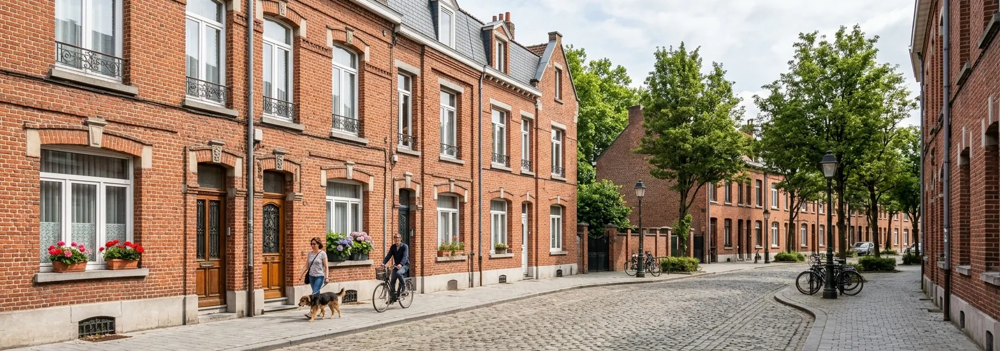

Monte-escalier à Lille : prix et solutions disponibles
[Introduction unique à la ville : bâti typique — maisons 1930 étroites à étages, courées… — rédigée spécifiquement, jamais dupliquée.]
Lille et sa métropole en quelques repères

[Caractéristiques du bâti lillois et conséquences concrètes pour un projet de monte-escalier : escaliers droits et raides des maisons 1930, largeur, paliers…]
Aides locales et contacts officiels
En complément de MaPrimeAdapt’ et des dispositifs nationaux : [lister uniquement les aides de la ville, de la métropole (MEL) et du département réellement vérifiées].
Couverture professionnelle à Lille
[Décrire uniquement la couverture réelle constatée pour la zone. Ne jamais mentionner de bureau local ou de professionnels sans couverture effective.]
Questions fréquentes à Lille
[Question spécifique au bâti ou aux aides lilloises]
[Réponse réellement locale — pas de contenu générique dupliqué.]
[Question spécifique n°2]
[Réponse réellement locale.]
Villes voisines publiées
Sources
Votre projet à Lille
[Conclusion unique à la ville.] Indiquez votre code postal pour vérifier les possibilités dans votre secteur.